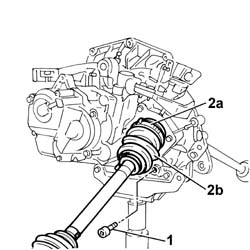

2710A42 l/h or r/h drive shaft (one) - r + r with gear box removed
- Path
- Procedures > 27 AXLE > 2710 FRONT AXLE > 2710A drive shafts and joints > 2710A42 l/h or r/h drive shaft (one) - r + r with gear box removed
- Kind
- repair procedure (removal / refitting; the operation number is the code)
- Applies to
- all engines; all production periods
- Interactive page
- https://sloeber94.github.io/elrnDB-fDbl/en/#/2584613
Applies to: all engines; all production periods
 Removing
Removing
 Refitting
RefittingPosition a suitable recipient to collect the fluid from the differential.
1. With the gearbox - differential unit positioned on a suitable support, unscrew the plug and drain the differential fluid.
Remove the fluid container positioned previously.
2. Disconnect collar (2a) connecting the gaiter to the differential, then release the sliding coupling (tripod) and remove drive shaft (2b).

Applies to: all engines; all production periods
Refitting
RemovingCheck the drive shaft for damage.
Check that the gaiters are not damaged and that they contain lubricating grease.
Fit the tripod joint onto the differential.
Lock the drive shaft on the flange using a new clip.
Screw on the gearbox oil plug and tighten it to the specified torque.
 | Fastening | Component | Ø | Value (daNm) |
|---|---|---|---|---|
- | Plug | GEAR CASING PADS | M22 x 1.5 | 3.6 |
Top up the differential fluid level.
Op. 0010T41 MANUAL GEARBOX OIL - CHECK LEVEL AND TOP UP IF NECESSARY
Applies to: engines: 1.3 JTD 16V; all production periods
Removing
RefittingPosition a suitable container to collect the fluid from the differential.
1. With the gearbox - differential unit positioned on a suitable support, unscrew the plug and drain the differential fluid.
Remove the fluid container positioned previously.
2. Disconnect collar (2a) connecting the gaiter to the differential, then release the sliding coupling (tripod) and remove drive shaft (2b).
Applies to: engines: 1.3 JTD 16V; all production periods
Refitting
RemovingCheck the drive shaft for damage.
Check that the gaiters are not damaged and that they contain lubricating grease.
Fit the tripod joint onto the differential.
Lock the drive shaft on the flange using a new clip.
Screw on the gearbox oil plug and tighten it to the specified torque.
| Fastening | Component | Ø | Value (daNm) |
|---|---|---|---|---|
- | Plug | GEAR CASING PADS | M22 x 1.5 | 3.6 |
Top up the differential fluid level.
Carry out
Op. 0010T41 MANUAL GEARBOX OIL - CHECK LEVEL AND TOP UP IF NECESSARY